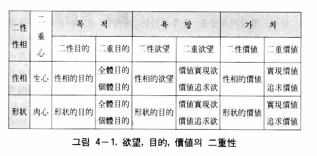
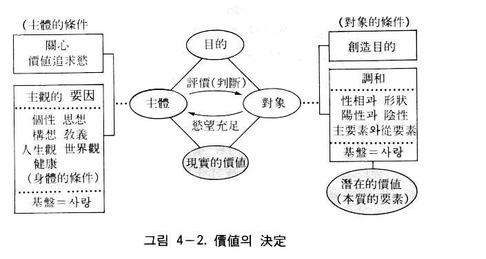

今日の時代は大混乱の時代であり、大喪失の時代であると規定することができる。戦争と紛争は絶えることなく、テロ、破壊、放火、拉致、殺人、麻薬中毒、アルコール中毒、性道徳の退廃、家庭の崩壊、不正腐敗、搾取、抑圧、謀略、詐欺、中傷など、数え切れない悪徳現象が世界を覆っている。このような大混乱の渦中において、人類の貴重な精神的財産がほとんど失われつつある。人格の尊厳性の喪失、伝統の喪失、生命の尊貴性の喪失、人間相互間の信頼性の喪失、父母や教師の権威の喪失などがそうである。
このような混乱と喪失をもたらした根本原因は何であろうか。それがまさに伝統的な価値観が崩壊したということである。つまり真、善、美に対する伝統的な観点が失われてしまったのである。中でも特に善に対する観念が消え失せて、倫理観、道徳観が急速に崩壊しているのである。それではこのように価値観の崩壊の原因は何であろうか。
第一に、経済、政治、社会、教育、芸術など、すべての分野において、神を排除し、宗教を軽視してきたためである。伝統的価値観のほとんどが、宗教的基盤の上に成立しているために、この基盤が崩れた価値観は必然的に崩壊するしかないのである。
第二に、唯物論や無神論、特に共産主義理論の浸透による価値観の破壊のためである。共産主義は人間を二つの階級に分けて、人と人の間の対立を煽り、不信感を増大せしめ、徹底的な敵愾心を起こさせようとした。そのとき、共産主義は伝統的な価値観を封建的であるとか、体制維持のための道具だといって批判し、価値観の崩壊を図ったのである。
第三に、宗教相互間の対立や思想相互間の対立のためである。そのような対立が価値観の崩壊を加速せしめたのである。価値観は宗教や思想の基盤の上に立てられるので、宗教や思想に対立があれば、人々は価値観を相対的なものと見るようになる。したがって、必ずしも一定の価値観に従わなくてもよいというような考え方が広がったのである。
第四に、中世以後伝わってきた伝統的な宗教（儒教、仏教、キリスト教、イスラム教）の徳目が、科学的な思考方式をもっている現代人を説得するのに失敗したためである。伝統的な宗教の教えの中には、非科学的な内容が少なくはなく、したがって科学に対して絶対的な信頼をもっている現代人には、そのような宗教的価値観は受け入れがたいのである。
伝統的価値観の崩壊の原因をこのように分析するとき、ここに必然的に新しい価値観の定立が要求される。というのは新しい価値観の定立なしには、やがて到来する未来の理想世界に備えることができないからである。それでは、新しい価値観はいかなるものでなければならないであろうか。それはまず、すべての既存の宗教の根本的な教えと、すべての思想の価値観を包容しうるものでなくてはならない。それはまた、唯物論や無神論を克服しうる価値観でなくてはならないし、科学をも包容し、科学を指導しうる価値観でなくてはならない。そのような内容をもつ価値観とは、絶対者である神の真の愛を中心とした絶対的価値観である。それがまさに未来社会に対備するために、今日、切に要求される新しい価値観である。
それでは、われわれが対備しなくてはならない未来社会は、具体的にどのような社会なのか考察して見よう。未来社会は本来の人間によって建設される社会であるが、本来の人間とは、神の心情、神の愛をもった人格の完成者のことである。ここで人格とは、心情を中心として知情意の機能が均衡的に発達した品格のことである。したがって未来社会は、神の心情を中心として、知情意の機能が調和的に発達した人間によって構成される社会である。ここに新しい価値とは、本来の知情意の機能に対応する価値のことである。
知情意の機能はそれぞれ真美善の価値を追求するが、それによって真実社会、芸術社会、倫理社会が実現される。ここで真実社会は真の価値を追求することによって実現される偽りのない真なる社会をいい、芸術社会は美の価値を追求することによって実現される美の社会をいい、倫理社会は善の価値を追求することによって実現される善の社会をいう。真実社会を実現するための理論として必要なのが教育論であり、芸術社会を実現するための理論として必要なのが芸術論であり、倫理社会を実現するための理論として必要なのが倫理論である。価値論は真美善の価値を総合的に扱う部門であって、これら三つの理論の総論となる。
未来社会はそのような真美善の価値が実現する社会となるだけでなく、科学の発達によって経済は高度の成長を成し遂げ、経済問題は完全に解決された豊かな社会が実現される。したがって、そのような社会に住む人々の生活は、価値を実現をしながら価値を楽しむ生活になるのである。心情を中心として真美善の価値が実現した社会が、すなわち心情文化の社会であり、統一文化の社会である。
以上で未来社会に備えるために新しい価値観が必要であることについて説明した。ところが新しい価値観は未来社会に備えるために必要であるだけでなく、今日の現実世界の混乱を収拾するためにも必要である。すでに述べたように、今日の現実世界は様々な要因によって、価値観が総体的に崩壊しつつあるが、これを収拾するためには健全な価値観の再定立が切に要求されるのである。
新しい価値観は文化の統一のためにも必要とされる。今日の世界の混乱を究極的に収拾するためには、いろいろな伝統文化の統一が必要である。ところが様々な文化はそれぞれ一定の宗教または思想を土台としている。そしてそのような宗教や思想は一定の価値観をもっている。したがって文化の統一のためには、様々な価値観の統一、例えばキリスト教価値観、仏教価値観、儒教価値観などの統一が要求されるし、また東洋と西洋の文化的価値観の統一が必要である。したがって、ここにおいても、すべての価値観を包容しうる新しい価値観の提示が要求されるのである。
新しい価値観を提示する前に、まず価値論と価値の意味が何であるかについて説明する。
価値論の意味
価値論は一般に経済学、倫理学などの分野においても扱われるが、哲学においては主として価値哲学のことをいう。すなわち価値一般に関する理論を扱う哲学部門である。価値論は近代に至って哲学体系の一部門となったが、あとで述べるように、その内容はたとえ断片的であっても古代においても発見されるのであり、カントが事実問題と価値問題を区別したのち、価値論は哲学上の重要な課題として提起されるようになった。
特にロッツェ（Rudolph H. Lotze, 1817-1881）が存在と価値を分離したのち、存在の世界に価値の世界を対置させると同時に、存在の世界は知性によって把握されるが価値の世界は感情によって把握されると主張し、哲学に価値概念を取り入れることによって、価値哲学の始祖となった。
価値とは何か
価値という言葉は本来は経済生活から出たものであるため、主に経済的価値を意味するが、今日に至って、この言葉が一般化し、社会、政治、法律、道徳、芸術、学問、宗教など人間生活のほぼ全般にわたって使われている。統一思想では、価値を大きくは物質的価値と精神的価値に区分する。物質的価値とは、商品価値のように生活資料の価値を意味し、精神価値は知情意の機能に対応する真美善の価値をいう。本価値論では、そのうち精神的価値を扱っている。
一般的に価値という概念を正確に定義するのは不可能であるとして、価値現象を通じて分析するほかないとされるが、本価値論では、価値は主体（主観）の欲望を充足させる対象の性質であると規定する。すなわち、ある対象があって、それが主体の欲望や願いを充足させる性質をもつとき、その主体が認める対象の性質を価値という。つまり価値は主体が認める対象価値であって、主体に認められなければ、それは現実のものとはならないのである。例えば、ここに美しい花があったとしよう。主体がこの花の美しさを認めなかったならば、その花の価値は現れないのである。そのように価値が現れるためには、主体が対象の性質を認めて評価する過程が必要である。
欲望
価値とは、すでに述べたように、主体の欲望を充足させる対象の性質をいうのであるが、ここで価値を論ずるためには、まず主体のもっている欲望について分析しなければならない。ところが今日まで、価値（物質的価値を含めて）を扱った思想家たちは、人間の欲望の問題を排除して、価値現象だけを客観的に扱ってきた。しかしそれは根のない木、または土台のない建築のようなものであって脆弱さを免れなかった。根のない木は枯れるしかなく、土台のない建築物は倒れるしかないからである。ゆえに今日、既存の思想体系はいろいろな社会問題の解決において、その無力さを露呈しているのである。
例えば物質的価値を扱う経済理論においても、現在の経済の混乱を解決するのに、ほとんど役立たなくなってしまった。そして労使関係が企業実績に及ぼす影響など、これまでの経済学者が予想もできなかった多くの問題が、続々と起きているのである。なぜそのような結果になったのであろうか。それは従来の経済学者たちが人間の欲望を正しく分析しなかったからである。経済学者たちは経済活動の動機が欲望であることを知りながら、その欲望を分析しなかったので、結局、彼らの理論は土台のない建物のようになってしまったのである。したがって、ここでは現れた現象を正しく理解するために、欲望の分析から始めるのであるが、それに先立ってまず価値論の統一原理的な根拠を扱うことにする。
統一原理によれば、人間は性相と形状の統一体であって、目的と欲望をもっている。欲望はもちろん神から賦与された創造本性（『原理講論』一一八頁）である。そして目的も欲望もそれぞれ二重性を帯びている。こうした事実を根拠として統一価値論が成立するのである。
性相・形状と二性目的
創造された人間には一定の被造目的（神の創造目的）が与えられている。こうした被造目的をもつ人間は二性性相の統一体である（すなわち霊人体と肉身の二重体であり、生心と肉心の二重心的存在である）。人間に被造目的が与えられているということは、人間の性相にも目的が与えられており、形状にも目的が与えられていることを意味する。前者を性相的目的といい、後者を形状的目的という。この両者を合わせて「二性目的」とも呼ぶ。二性性相に対応する目的という意味である。
性相は生心を意味し形状は肉心を意味するために、性相的目的とは生心がもっている目的であり、形状目的とは肉心がもっている目的である。したがって性相的目的とは、生心の目的である真善美愛の生活を営むことを意味し、形状的目的とは肉心の目的である衣食住性の生活を営むことを意味するのである。
性相・形状と二性欲望
人間は性相と形状の統一体であり、生心と肉心の二重心的存在であるために、目的と同様に、欲望にも性相的欲望と形状的欲望がある。これを「二性欲望」と呼ぶことにする。「二性目的」と同様に、二性性相に対応する欲望という意味である。性相的欲望とは、生心の欲望としての真善美愛の生活に関する欲望であり、形状的欲望とは、肉心の欲望としての衣食住性の生活に関する欲望である。
二重目的と二重欲望
統一原理によれば、人間はまた全体目的と個体目的という二重目的をもつ連体である（『原理講論』六五頁）。これは性相（生心）も全体目的と個体目的をもっており、形状（肉心）も全体目的と個体目的をもっていることを意味する。すなわち性相的目的にも全体目的と個体目的があり、形状的目的にも全体目的と個体目的があることを意味する。
ところで欲望とは、与えられた目的を達成しようとする心の衝動である。したがって欲望には、全体目的を達成しようとする欲望と個体目的を達成しようとする欲望がある。前者を価値実現欲といい、後者を価値追求欲という。この両者を合わせて「二重価値欲」と呼ぶ。これは性相的欲望と形状的欲望が、それぞれ二重目的を実現するための二重欲望、すなわち価値実現欲と価値追求欲をもっていることを意味する。それゆえ性相的欲望にも価値実現欲と価値追求欲があり、形状的欲望にも価値実現欲と価値追求欲があるのである。
ここで二重目的および二重欲望と関連して、二重価値について説明する。目的に二重目的があり、欲望に二重欲望があるように、価値にも二重価値がある。それが実現価値と追求価値である。価値実現欲によって実現しようとする価値、または実現された価値が「実現価値」であり、価値追求欲によって追求しようとする価値、または追求された価値が「追求価値」である。このような二重目的と二重欲望と二重価値は、互いに対応関係にあるのである。
欲望の由来と創造目的
ところで、人間の欲望は何のためにあるのだろうか。それはすでに述べたように、創造目的を実現するためにあるのである。神の創造目的とは、神においては、対象（人間と万物）から喜びを得るということである。しかし被造物の立場から見れば、その創造目的は被造目的のことである。特に人間は、神に美を返し、神を喜ばせるということにその目的があるので、人間の創造された目的すなわち人間の被造目的は、人間が、生育し、繁殖し、万物を主管するという三大祝福を成就することによって達成される。したがって人間の創造目的（被造目的）とは、とりもなお
さず三大祝福を完成するということを意味するのである。
神が人間を創造されたとき、人間に目的だけを与えて欲望を与えなければ、人間は、せいぜい、ただ「創造目的がある」、「三大祝福がある」ということが分かるだけで、実践の当為性を感じることはできなかったはずである。だから神は、人間にその目的を実現していくための衝動的な意欲――やってみたい、得てみたいという心の衝動性――を与えなければならなかった。その衝動性が欲望である。したがって人間は、生まれながらに創造目的（被造目的）、すなわち三大祝福を達成しようとする内的な衝動を感じながら、成長していくのである。そしてこのような欲望の基盤になっているのが心情である。
人間は、全体目的と個体目的の二重目的をもつ連体である。したがって創造目的の実現は、全体目的と個体目的を実現することである。人間の全体目的とは、真の愛を実現すること、すなわち家庭、社会、民族、国家、世界、そして究極的には人類の父母である神に奉仕することであり、人類と神を喜ばせようとすることである。そして個体目的とは、個体が自己の成長のために生き、自己の喜びを求めようとすることである。人間のみならず、万物もすべて、全体のための目的と個体のための目的という二重目的をもっている。それが創造目的の二重性、すなわち被造目的の二重性である。
万物と人間では創造目的の達成の仕方が異なっている。無機物は法則に従って、植物は自律性（生命）に従って、動物は本能に従って、それぞれの創造目的を達成する。しかし人間の場合は、
神から与えられた欲望に従って、自由意志をもって自らの責任で創造目的を達成するのである。すでに述べたように、欲望とは与えられた目的を達成しようとする心の衝動のことである。
目的に全体目的と個体目的の二重目的があるように、それに対応して欲望にも価値実現欲と価値追求欲の二重欲望がある。そしてこの二重目的と二重欲望に対応する価値が実現価値と追求価値の二重価値である。以上のことを二性目的、二性欲望、二性価値と関連づけて、その相互関係を表すと、表４―１のようになる。

性相的価値
価値とは、主体の欲望を充足させる対象の性質である。性相と形状の二重的存在である人間の欲望に性相的欲望と形状的欲望があるから、価値にも性相的欲望を充足させる性相的価値と形状的欲望を充足させる形状的価値がある（表４―１）。性相的欲望を充足させる性相的価値は真善美と愛であるが、実は、愛は価値そのものというよりは真善美の価値の基盤である。真善美は、心の三機能である知情意に対応する価値である。すなわち主体が対象のもつ価値的要素を評価するとき、知情意の三機能に従って、それぞれ異なるものとして判断するのが真美善の価値なのである。
形状的価値
一方、形状的欲望を充足させる価値とは、衣食住の生活資料の価値、すなわち物質的価値（商品価値）のことをいう。物質的価値は肉身生活のための価値であり、肉心の欲望を充足させる価値である。肉身の生活は、霊人体を成長せしめ、三大祝福を完成せしめるための土台となっているために、形状的価値は性相的価値の実現に際して必要条件となっている。
ここで愛は真善美の価値の基盤であるということについて、具体的に述べる。主体が対象を愛すれば愛するほど、また対象が主体を愛すれば愛するほど、主体にとって対象は、いっそう真に、美しく、善に見える。例えば父母が子女を愛するほど、また子女が父母を愛するほど、父母にとって子女は美しく見える。そして子女が美しく見えれば、父母は子女をもっと愛したくなるのである。真と善においても同じである。父母が子女を愛するほど、また子女が父母を愛するほど、子女はもっと真に、また善に見える。すなわち愛を土台にして真善美が成立するのである。もちろん愛なしに真善美が感じられるときもある。しかし、厳密にいえば、そのときにも実は無意識のうちに、主体の潜在意識の中に愛が宿っているのである。
そのように愛は価値の源泉であり、基盤である。愛がなければ真なる価値は現れない。したがって、われわれが神の心情を体恤し、愛の生活をするならば、今までに経験したものより、はるかに輝かしい価値を体験し、実現することができるようになるのである。
以上、価値には性相的価値と形状的価値があるということを明らかにしたが、本価値論では、主として性相的価値を扱うのである。
価値の本質的要素と現実的価値
価値には対象がもっている性質としての価値と、主体と対象の間で決定される価値の二つの価値がある。前者を潜在的価値、後者を現実的価値という。先に価値とは主体の欲望を充足させる対象の性質であるといったのは、潜在的価値のことである。価値は必ず現実的に評価されるものであり、評価は主体と対象の間の授受作用によってなされる。その評価（授受作用）によって決定される価値が現実的価値である。
潜在的価値、すなわち対象がもっている性質とは、価値の本質的要素であり、対象がもっている内容、属性、条件などをいう。真善美の価値それ自体が対象に与えられているのではなく、そのような価値となりうる要素（本質的要素）として対象の中に潜在しているのである。それが対象がもっている潜在的価値である。
潜在的価値（本質的価値）
それでは価値の本質、すなわち価値の本質的要素とは、具体的にいかなるものであろうか。それは対象のもっている創造目的と、対象の中にある相対的要素の相互間の調和である。すべての被造物には、必ず創造目的（被造目的）がある。例えば、花には美でもって人間を喜ばせようという創造目的がある。人間が造った芸術作品や商品の場合でも、必ず造られた目的がある。
それから相対的要素の調和とは、主体的要素と対象的要素の調和のことである。万物は個性真理体であるために、原相に似て必ずその内部に性相と形状、陽性と陰性、主要素と従要素などの、主体的要素と対象的要素の相対的要素が宿っている。この相対的要素の間には、必ず授受作用による調和が現れる。その時の授受作用は、対比型の授受作用である。そのように、創造目的を中心として相対的要素が調和している状態、それがまさに価値の本質である。
価値の決定
価値は、主体である人間と対象である万物との相対的関係において、つまり授受作用によって決定または評価されるのであるが、対象の備えるべき条件（対象的条件）は、すでに述べたように、創造目的を中心とした相対的要素相互間の調和である。一方、主体にも備えなければならない条件（主体的条件）がある。まず主体が、価値追求欲と対象への関心をもつことが価値決定の前提条件となっている。そして価値の決定を左右するのが、主観的要因として、主体のもっている思想、趣味、個性、教養、人生観、歴史観、世界観などである。主体のもつべきこのような関心、価値追求欲、および主観的要素が主体的条件である。現実的価値は、この主体的条件と対象的条件の相対関係において決定されるのである（図４―１）。

すなわち主体的条件と対象的条件が成立するとき、そこに授受作用が行われ、具体的な価値が決定される。具体的な価値が決定されるとは、価値の量と質が決定されるという意味である。価値の量とは、花の場合、「とても美しい」とか「あまり美しくない」というような、価値評価の量的な側面をいう。また価値には質的な側面もある。例えば、芸術論で述べるように、美には、優雅美とか、畏敬美、荘厳美、滑稽美などいろいろなニュアンスの美があるが、それが質的な側面から見た美の価値である。
主観作用
すでに述べたように、価値を決定するのに主観的要因が大きく作用する。すなわち主体の思想、世界観、趣味、個性、教養などの主体的条件が対象に反映されて（対象的条件につけ加えられて）、主体だけが感じる特有な現実的価値が決定されるのである。
例えば同じ月を見ても、ある人には悲しく見え、またある人には美しく見えることがある。また同じ人が見ても、悲しい時に見れば月も悲しく見え、気分が良い時に見れば月も美しく見える。主体の心のもち方によって美に差異が生ずるのである。それは美に関してだけでなく、善や真の価値に関しても同様である。そしてそれは商品価値に関しても言えることである。そのように主観が対象に反映することによって、量的にも質的にも価値の差異が生ずるのであるが、そのような主体的条件の作用を「主観作用」という。つまり主体の主観が対象に反映される作用である。
これは美学におけるリップス（T. Lipps, 1851-1914）の「感情移入」に相当する。感情移入とは、自然風景を見るときや芸術作品を鑑賞するとき、自己の感情や構想を対象に投射し、それを鑑賞することをいう。このような主観作用の例を二三挙げてみよう。まず文先生のみ言の中から例を挙げよう。
神の子があなたにハンカチーフを与えたと考えてみよう。そのハンカチーフは金よりも価値が多く、生命よりも価値が多い。またその他のどのようなものよりも価値が大きい。もしもあなたが本当に神の子であるならば、あなたがどのようにみすぼらしい所に住んでいようとも、そこは宮殿である。その時は衣服は問題ではない。われわれの寝ているその場所も問題ではない。なぜならば、われわれはすでに富者となっているからである。われわれは神の王子たちである(2)。
このみ言は、心の中で神の子であるという自覚をもつならば、粗末な小屋も、そのまま宮殿のように立派に見えるという意味であり、主観作用の適切な例である。聖書には「神の国は、実にあなたがたのただ中にあるのだ」（ルカ一七・二一）という聖句があるが、これもまた主観作用の例である。また仏教には三界唯心所現という言葉がある。これは三界、すなわち世界全体のあらゆる現象は、心の現れ出たものであるという意味である(3)。これも主観作用の例である。
価値の基準
① 相対的基準
主観作用のために、価値の決定（評価）は人によって異なるものとして現れる。しかし主体的条件に共通性が多い時には、価値評価にも一致点が多くなり、同じ宗教や同じ思想をもつ人たちの間での価値評価の結果はほとんど一致する。例えば儒教の徳目である「父母への孝行」は、儒教社会ではいつも一致した評価であり、普遍的な善である。
このことは宗教や思想が同じ社会では、価値観の統一が可能であることを意味する。ローマの平和（Pax Romana）の時代には、ストア哲学が一般化したために、克己的精神と世界市民主義が支配的な統一的な価値観であった。また中国の唐の時代や韓半島の統一新羅の時代には、仏教が国教であったために仏教的な道徳が中心的な価値観であった。またキリスト教国家であるアメリカ合衆国においては、キリスト教（新教）の道徳観が国民の統一的な価値観となっているのである。
ところが互いに異なる宗教や異なる文化の背景をもつ社会の間には、価値観の差異が現れる。例えばヒンドゥー教では、牛肉を食べることは禁じられているが、イスラム教では豚肉を食べることが禁じられている。また共産主義のいう平和観と自由主義世界のいう平和観は、その概念が全く違っていた。
そのように共通の宗教や思想をもっている地域や社会における価値観は、国民の間でほとんど一致しているが、宗教や思想が異なるときには、価値観は一致しなくなる場合があり、そのとき価値観の一致は一定の範囲にとどまる。そして共通の価値評価の基準が一定の範囲に限られるとき、そのような価値評価の基準を相対的基準というのである。
② 絶対的基準
価値の相対的基準でもっては全人類の価値観を統一することはできない。価値観の相違による対立や闘争をなくすことはできないからである。したがって全人類の真の平和が定着するためには、宗教的な差異、文化的な差異、思想的な差異、民族的な差異などを克服することのできる評価基準、すなわち全人類に共通な価値評価の基準が立てられなくてはならない。そのような価値評価の基準が絶対的基準である。
それでは、そのような絶対的基準はいかにして立てることができるであろうか。そのためにはすべての宗教、すべての文化、すべての思想、すべての民族などを存在せしめた根源者が一つであることを明らかにし、その根源者に由来するいろいろな共通性を発見すればよい。存在論で述べたように、宇宙万物は千態万象であるが、一定の法則によって秩序整然と運行しており、またすべての万物は共通した属性をもっている。それは宇宙万物が神に似せて造られているからである。地球上の数多くの宗教、文化、思想、民族は、それぞれ価値観が異なっているのが普通であるとしても、それらを生じせしめた根源者は一つしかないとすれば、そこには根源者に由来する共通性が必ずあるはずである。
今日まで数多くの宗教が現れたが、決して、それぞれの教祖たちが自分勝手に宗教をつくりあげたのではなかった。神は最終的に全人類を救うために、一定の時代に、一定の地域に、一定の教祖を立てて、まずもって、その時代、その地域の人々を善なる方向へ導こうとされたのである。すなわち神は時や場所によって、言語、習慣、環境の異なる人々に対して、その時代、その地域に適した宗教を立てて救いの摂理を展開されたのである。
そこで各宗教の共通性を発見するためには、すべての宗教を立てた根源者がまさに唯一の神であることを明らかにしなければならない。宇宙万物の根源者をユダヤ教ではヤーウェ、イスラム教ではアッラー、ヒンドゥー教ではブラフマン、仏教では真如、儒教では天といっているが、これはキリスト教でいう神と同一の存在である。ところがこれらの各宗教は、根源者の属性について明らかにしていない。例えば儒教では天が具体的にいかなるものである明らかにできていないし、仏教における真如においても、ヒンドゥー教のブラフマンにおいてもそうである。またキリスト教の神にしても、ユダヤ教のヤーウェ、イスラム教のアッラーにおいても、同様である。
そればかりでなく、これらの各宗教の根源者がなぜ人間と宇宙を創造されたのか明らかにされていないし、悲惨な人類社会をなぜ一日も早く、一時に救うことができなかったのかということも明らかにされていない。そのように各宗教の根源者はベールに包まれていて、漠然と認識されてきたのである。そして各宗教の根源者に関する説明はその根源者の一面だけをとらえたにすぎなかったために、各宗教の根源者が互いに異なるように見えたのである。
これらの各宗教の根源者が、結局は同一なる存在であることを証明するためには、その根源者がいかなる方か、正確に知らなくてはならない。すなわち神の属性、創造目的、宇宙創造の法則（ロゴス）などを正しく理解しなくてはならない。そうすれば、各宗教は同一なる神によって立てられた兄弟の宗教であることが分かるようになる。そして長い間の対立と闘争の関係を清算して、互いに和解し、愛し合うようになるのである。結局、神がいかなる方かを正確に知ることが、問題解決の鍵となるのである。文化、思想、民族に関しても同様である。すべての文化、思想、民族を発生せしめた根源者が同一の存在であることが分かれば、文化の共通性、思想の共通性、民族の共通性なども明らかになってくるのである。
それでは価値評価の絶対的基準となりうる共通性とは、具体的にいかなるものであろうか。それがすなわち神の真の愛（絶対的愛）と神の真の真理（絶対的真理）である。神は愛を通じて喜びを得るために人間を創造されたのである。そのような神の愛は、キリスト教のアガペー、仏教の慈悲、儒教の仁、イスラム教の慈愛などとして表現される。結局、すべての宗教の愛の教えは一なる神の愛に由来するのである。神の愛は人間において、家庭を通じて、父母の愛、夫婦の愛、子女の愛という三対象の愛として現れる（子女の愛を子女の父母に対する愛と子女相互間の愛に分けると四対象の愛になる）。キリスト教の隣人愛の実践、仏教の慈悲の実践、儒教における仁の実践、イスラム教における慈愛の実践などは、みなこの三対象の愛の実現であったのである。
そして永遠性をもつ神が宇宙を創造されたために、宇宙の運行を支配する真理（理法）は永遠普遍である。宇宙における共通な普遍的事実とは、宇宙のすべての存在者は、自分のために存在しているのではなく、他のため、全体のため、そして神のために存在しているということである。すなわち「ために生きる存在」であるということである。したがって普遍的な善悪の基準は、他人（人類）のために生きるか、自己中心的に生きるかということである(4)。
③ 絶対的基準と人間の個性
このようにして神の真の愛と真の真理によって、価値決定の絶対的基準が立てられ、世界万民の価値判断（決定）が一致するようになる。それではそのとき人間の個性はどうなるのであろうか。価値判断は個人の主観的な要因によってなされるのだから、個性によって価値評価に必ず差異が生じるはずなのに、ここに絶対的基準のもとに価値評価が一致するとすれば、個人の個性は無視されるのではないかという疑問が生じるであろう。しかし、絶対的基準において価値判断が一致化されるとしても、個性が無視されるとか、なくなるのではなく、そのまま生かされるのである。
人間は個性真理体であるために、神の普遍相（共通性）と個別相（特殊性）に似ており、また連体であるために、全体目的と個体目的をもっている。したがって、価値評価の絶対的基準は普遍相（性相、生心、心情、ロゴス）と全体目的に基づいた評価基準であり、主観作用は個別相および個体目的に基づいた評価基準なのである。
したがって、いくら絶対的基準によって絶対的価値が決められるとしても、主観作用による個人差は当然あるのである。言い換えれば、絶対価値とは個人差を含んだ普遍価値である。それは、あたかも個性真理体が個別相を含んだ普遍相をもつ個体であるのと同じである。そして全体目的を優先させながら個体目的を追求し、普遍相をもちながら個別相を現すのが人間である。
絶対的基準における価値評価においても、このような人間の個性に基づいた主観作用を免れることはできない。しかし、あくまでも共通性を基盤としての差異性である。そして、そこには差異性による価値観の混乱はありえない。なぜならば、その時の差異は質的な差異ではなく量的な差異だからである。
例えば善の判断の場合、「貧しい人を助ける」というのは、宗教や思想を問わず善として判断される。それを悪と判断（質的判断）する人は理想世界にはありえない。しかし判断する人によっては、その善が「大いに善である」、「中程度の善である」、「普通の善である」などのように、量的な評価の差異がありうるのである。美や真の判断においても同じである。
価値評価の絶対的基準とは、要するに質的判断の一致をいうのである。ところが堕落社会は利己主義の社会であるために、質的判断の差異すら生じるようになり、その結果、しばしば価値観に混乱が生じるのである。
ここに、新しい価値観の定立ならびに価値観の統一が可能になる。すなわち価値観の個別性を生かしながら、価値評価の基準を絶対的愛と絶対真理を中心として一致化させるのである。新しい価値観とは、そのような神の絶対的愛と絶対的真理を基盤とした価値観である。この新しい価値観における価値がまさに絶対的価値である(5)。そのような絶対的価値をもって、すべての価値観を和合し、調和せしめることができる。それがまさに価値観の統一である。このような価値観の統一には、神の属性、創造目的、心情、愛、ロゴスなどに関する正確な理解が前提にされなければならない。宗教統一、思想統一は、そのような価値観の統一をもって可能になるのである。
すでに述べたように、今日の価値観の崩壊の原因の一つは従来の価値観――主として宗教的価値観――が説得力を失ったことにある。それでは、いかにして従来の価値観は説得力を失ったのであろうか。
キリスト教の価値観の脆弱性
キリスト教には、次のような聖句に表される立派な徳目がある。
「自分を愛するように、あなたの隣り人を愛せよ」（マタイ二二・三九）
「敵を愛し、迫害する者のために祈れ」（マタイ五・四四）
「何事でも人々からしてほしいと望むことは、人々にもそのとおりにせよ」
（マタイ七・一二）
「こころの貧しい人たちはさいわいである。天国は彼らのものである。
悲しんでいる人たちはさいわいである。彼らはなぐさめられるであろう。
柔和な人たちはさいわいである。彼らは地を受けつぐであろう。
義に飢えかわいている人たちはさいわいである。彼らは飽きたりるようになるであろう。
あわれみ深い人たちはさいわいである。彼らはあわれみを受けるであろう。
心の清い人たちはさいわいである。彼らは神を見るであろう。
平和をつくりだす人たちはさいわいである。彼らは神の子とよばれるであろう。
義のために迫害されてきた人たちはさいわいである。天国は彼らのものである」
（山上の垂訓、マタイ五章）
「このようにいつまでも存続するものは信仰と希望と愛とこの三つである。このうちで最も大いなるものは愛である」
（第一コリント一三・一三）
「御霊の実は、愛、喜び、平和、寛容、慈愛、善意、忠実、柔和、自制であって、これらを否定する立法はない」
（ガラテヤ五・二二―二三）
ところで「愛は人の徳を高める」（第一コリント八・一）とあるように、徳目の基礎になっているのが愛である。そして「愛は神から出たものである。……神は愛である」（第一ヨハネ四・七―八）とあるように、愛の基礎になっているのが神である。
ところが近代に至って、ニーチェ、フォイエルバッハ、マルクス、ラッセル、サルトルなどによって、神の存在が否定された。そして神を否定するそのような思想に対して、キリスト教は有効的に対処できなかった。すなわち有神論と無神論の理論的対決において、キリスト教は敗北を重ねてきたのである。その結果、多くの若者たちが無神論のとりこになってしまった。
さらにキリスト教価値観に対する共産主義の意図的な挑戦があった。共産主義は、キリスト教のいう絶対的愛とか人類愛を否定し、真の愛は階級愛または同志愛であると主張した。利害が対立している社会において、階級を越える愛はありえないと見るからである。人間はプロレタリアートの側に立つか、ブルジョアジーの側に立つか、二者択一である。したがって、人類愛といっても、それは言葉だけのことであって、実際には階級社会において人類愛を実践することはできないと主張したのである。
このような主張を聞けば、確かに階級愛のほうが現実的であり、キリスト教の愛は観念的であるかのように思われる。ことに愛の源泉である神の存在に確信がもてないというような状態では、従来のキリスト教の神観または愛観に説得力がありえないのは、あまりにも当然である。
また今日、第三世界において解放神学や従属理論が台頭したのも無理のないことであった。解放神学によれば、イエスはその時代の抑圧された人々、貧しい人々を救うために来られた方であり、革命家であった。したがって真のキリスト者は社会革命のために立ち上がらなくてはならないと説いた。そしてキリスト者の貧民への同情が、共産主義の階級愛と符合して、現実問題の解決において共産主義と提携する必要さえあるという主張までなされたのである(6)。
従属理論によれば、第三世界の貧困は先進諸国と第三世界との構造的矛盾からくる必然的な結果であって、第三世界が貧困から解放されるためには、第三世界は先進諸国すなわち資本主義諸国と対決しなければならないと説いた。そして解放神学と同様に、従属理論も共産主義との提携を図ったのである(7)。
解放神学や従属理論には、共産主義のような確固たる哲学、歴史観、経済理論がない。したがって、結局は共産主義に引き込まれていかざるをえない。ところがキリスト教は、このような事態に対して、何ら適切な処置を講ずることができなかったのである。
儒教の価値観の脆弱性
儒教には次のような徳目がある。
① 五倫…古来、「父子親あり、君臣義あり、夫婦別あり、長幼序あり、朋友信あり」の五つは人倫の基礎とされ、孟子によってさらに強調された。
② 四徳…孟子は仁義礼智の四徳を説いた。のちに漢の董仲舒はこれに信を加えて、仁義礼智信という五常の道を立てた。
③ 四端…孟子によれば、惻隠の心（他人を思いやる心）、羞悪の心（不義を憎む心）、辞譲の心（譲り合う心）、是非の心（善悪を分別する心）を四端というが、それぞれが仁義礼智の基本であると見なした。
④ 八条目…格物、致知、誠意、正心、修身、斉家、治国、平天下(8)
⑤ 忠孝
これらの徳目の基礎となっているのは仁であり、仁の基礎になっているのが天であった(9)。ところが儒教において、天とは何か、明確に説明されていないのである。
共産主義者は、「土台と上部構造」の理論を適用して、儒教の教えは封建時代において、支配階級が一般大衆を従順に従わしめるために作り上げた階級支配の合理化のための手段にすぎず、したがって今日の権利の平等と多数決の原則を旨とする民主主義社会には合わないといって、儒教を批判した。その結果、儒教の徳目は今日ほとんど顧みられなくなった。しかも社会が都市化し、家庭が核家族化するにつれて、儒教的価値観はいっそう崩壊しつつあり、その結果、社会の無秩序と混乱が加重されたのである。
仏教の価値観の脆弱性
仏教の根本的な徳目は慈悲であるが、慈悲を実践するためには、修行生活が必要である。人間は修行生活を通じて声聞（仏陀の説法を聞き四諦の道理を悟り、自ら修行完成者である阿羅漢の弟子となることを理想とする仏道修行者）、縁覚（仏陀の教えによらないで、自ら不生不滅の真理を悟り、自由の境地に到達した聖者）を通過し、菩薩（成仏するために修行に励む人の総称として、上に対しては仏陀に従い、下に対しては一切の衆生を教化する仏陀に次ぐ聖人）、仏陀（自ら仏教の大道を悟った聖人）に至るのであるが、菩薩、仏陀の段階で慈悲を実践するようになる。声聞、縁覚では、まだ慈悲を実践するような段階ではない。
人間は、世の中のすべての事物が変化すること、すなわち無常であることを自覚せず、現実の生活に執着している。それが苦の原因である。したがって苦しみを滅するためには、修行生活を通じて執着を去らなくてはならない。執着から離れ、苦しみから解き放たれることがすなわち解脱である。そのように解脱して無我の境地に入って、初めて真に慈悲を実践することができるというのである。
釈迦の思想を体系化したのが四諦八正道の教えである。四諦とは、苦諦、集諦、滅諦、道諦をいう。苦諦とは、現世の生はみな苦しみであるという教えである。集諦とは、苦しみの原因は執着（渇愛）であるという教えである。滅諦は、涅槃の境地（悟りの境地）を理想とする内容であり、苦しみから脱するためには執着を捨て去らなければならないという教えである。そして道諦は、涅槃に至る正しい修行の道があるという教えである。その道が八正道であるが、そこには次のような八つの徳目がある
① 正見………すべての偏見を捨てて、万物の真相を正しく判断せよ。
② 正思………正しく考えなさい。
③ 正語………正しく話しなさい。
④ 正業………殺生や盗みをしてはならない。
⑤ 正命………正法に従って正しい生活を行いなさい。
⑥ 正精進………一心に努力して、まだ起きていない悪を生じさせないようにして善を生じさせるようにしなさい。
⑦ 正念………雑念を離れて真理を求める心をいつも忘れてはならない。
⑧ 正定………煩悩による乱れた考えを捨てて、精神を正しく集中させ心を安定させなさい。
人間に苦しみが生じてきた原因を追求し、十二項目の系列を立てたのが十二因縁（十二縁起）の教えである。それによれば、人間の苦しみの根本原因は渇愛であり、渇愛の奥に無明があるという。無明とは、真如に対する無知であり、苦痛や煩悩は本来のものではないということを悟らないことである。この無明から一切の煩悩が生ずるというのである。
大乗仏教において、菩薩になるために守らなくてはならない六つの徳目があるが、それが次のような六波羅蜜（六波羅蜜多）である。
① 布施………慈悲心をもって、他人に無条件に施すこと。
② 持戒………戒律を守ること。
③ 忍辱………迫害を耐えること。
④ 精進………仏道をたゆまず実践すること。
⑤ 禅定………精神を統一すること。
⑥ 智慧………正しいこと正しくないこと、善悪、是非を判断すること。
以上の八正道や六波羅蜜などの徳目の根本になっているのが慈悲である。そして慈悲の基礎になっているのが、宇宙の本体としての真如である(10)。ところが今日、仏教の価値観も説得力を失っている。その原因は、仏教の教理に次のような問題点があるからである。すなわち、宇宙の本体であるという真如が具体的にいかなるものか明らかでないこと、諸法（宇宙万象）がいかにして生成（縁起）したか不明であること、無明はなぜ生じたかということに対する根本的解明がないこと、現実問題（人生問題、社会問題、歴史問題）の根本的解決は修道だけでは不可能であること、修行生活が現実問題の解決につながっていないことなどである。
その上に、共産主義による挑戦があった。共産主義者たちは次のように攻撃した。「現実社会には搾取、抑圧、貧富の格差、社会悪が充満しているが、その原因は無明にあるのではなくて、資本主義社会の体制的矛盾にあるのだ。仏教の修行は個人の救済のためであり、それは現実からの逃避、問題解決の回避ではないか。現実の問題を解決しないで修行するのは偽善でしかない」。そのように攻撃されると、仏教は他の宗教と同様、有効的な反論を提示できなかったのである。
イスラム教の価値観の脆弱性
イスラム教では、預言者の中ではマホメットが最も偉大であり、経典の中ではコーランが最も完全だと信じているが、アブラハム、モーセ、イエスなどをマホメットと共に預言者として信じている。そして、コーラン以外に、モーセ五書、ダビデの詩篇、イエスの福音書も経典としている。したがってイスラム教の徳目には、ユダヤ教やキリスト教の徳目と共通する点が多いのである(11)。
イスラム教には、六信と五行という信仰と実践の教えがある。六信とは、神、天使、経典、預言者、来世、天命に対する信仰をいい、五行とは、信仰告白、礼拝、断食、喜捨、巡礼を行うことをいう。
信仰の対象はアッラーの神であって、アッラーは絶対、唯一であり、創造主であり、支配者である。アッラーはいかなる神であるかという問いに対して、イスラム教の神学者たちは九十九の属性を挙げているが、その中で最も基本的な属性としては「慈悲ぶかい」、「慈愛あまねき」を挙げることができる(12)。したがって、イスラム教の徳目の中で最も基本的なものは慈悲または慈愛であるということができる。
このようにイスラム教の価値観には、本来、他宗教の価値観との共通性、調和性をもっているのであるが、現実においては、今日までイスラム教派内での教派間の争い、他宗派との戦いなど深刻な対立が多く見られた。そしてそのような対立に乗じながら、共産主義が浸透してきたのである。共産主義者たちは次のように批判した。「イスラム教のいう人類愛は現実的にはありえない。イスラム教派間の争いがそれを証明しているではないか。階級社会においては階級愛があるだけである」。こうして共産主義者たちは、イスラム教と他宗教との対立を利用しながら、一部のイスラム教国家を親共または容共に導いたのである。
そのようにイスラム教は内的に教派間において対立が見られるのみならず、外的に他の宗教（例えばユダヤ教、キリスト教）とも昔から深刻な対立関係にあったのである。同じ宗教の教派同士で、そして、共に神の創造と摂理を信ずる他の宗教とも深刻な対立を呈することは、それ自体、他の人々に対してイスラム教の価値観の説得力を喪失させているのである。
人道主義価値観の脆弱性
人道主義（humanitarianism）はヒューマニズム（humanism 、人本主義）と同じ意味で用いられる場合が多い。しかし厳密にいえば、人道主義とヒューマニズムは区別される。ヒューマニズムが人間の解放を目標として、人格の自主性を追求した思潮であったのに対して、人道主義には倫理的な色彩が強く、人間の尊重、博愛主義、四海同胞主義などを主張している。人間には動物とは異なって人間らしさがある。したがってすべての人間は尊重されなければならない、といった漠然とした考え方が人道主義である。しかし、人道主義において人間は何かという基本問題が明確に解明されていないのである。
したがって人道主義は、共産主義の攻撃に対して弱点を現してきた。例えば人道主義的な経済人がいるとする。共産主義者は彼に次のようにいう。「あなたは自分が知らないうちに労働者を搾取しているのだ。すべての人々がともに喜ぶことのできる豊かな社会をつくるべきではないか」。また人間として何より大切なことは、知識をもつことだと考えている青年がいるとする。すると共産主義者がやって来て彼にいう。「あなたは何のために勉強しているのか。自分の出世ばかり考えてはいけない。それは結局、ブルジョアジーのために奉仕する結果になるのだ。われわれは人民のために生きるべきではないか」。そのように批判されれば、良心的な青年であれば反論するのが難しく、共産主義者にはならないにしても、心の中では、共産主義理論には一理あると考えるようになるのである。そのように、人道主義的な価値観をもっている人たちは、共産主義者の攻撃に対してなすべきところがなかった。そして、今まで多くの人道主義者たちが共産主義にあざむかれたのであった。しかし、共産主義が崩壊した今日に至り、彼らは結局、共産主義が誤りであったことを悟ったのである。
以上、従来の価値観が今日、説得力を失ってしまった経緯が明らかになったと思う。それゆえ伝統的な価値観を回復する道は、確固とした神観の上に新しい価値観を定立することである。
すでに述べたように、新しい価値観とは絶対的な価値観をいう。価値観の崩壊していく今日、新しい価値観の定立が何よりも重要であるが、相対的価値観でもってこの崩壊現象を防ぐのは、ほとんど不可能である。したがって、それは絶対的価値観によらなければならない。絶対的価値観は、絶対者である神がいかなる属性をもっておられ、またいかなる目的（創造目的）と法則（ロゴス）でもって人間と宇宙を創造されたのかということを明らかにした基盤の上に立てられる価値観である。
神は愛を通じて喜びを得ようとして、愛の対象として人間を創造された。また人間を喜ばせるために、人間の愛の対象として万物を創造された。絶対的価値とは、このような神の愛（絶対的愛）を基盤として立てられた真善美の価値、すなわち絶対的真、絶対的善、絶対的美をいうのである。そのように新しい価値観は、絶対的愛を基盤として成立するのである。
ところで価値観の統一とは、価値（特に善の価値）の判断基準を一致させることである。そのためには、すべての宗教の徳目が絶対的価値の様々な表現形態であること、したがって、すべての徳目は絶対的愛を実現するためにあるという事実を明らかにする必要があるのである。
このような観点から見るとき、新しい価値観は従来のキリスト教、儒教、仏教、イスラム教などの価値観を完全に否定して、全く新しく立てられるのではないのである。従来の価値観の基盤が崩れたのだから、二度と崩れない確固たるものとして立て直し、従来の価値観を蘇生させることができるものとして立てられるのが新しい価値観である。そのような新しい価値観の絶対性を保証するために、次のような神学的、哲学的、歴史的根拠を提示する。
神学的根拠の提示
神学的根拠の問題とは、宇宙の絶対者、すなわちキリスト教の「神」、儒教の「天」、仏教の「真如」、イスラム教の「アッラー」などが、実際に存在するのかどうか、そしてその相互の関係はどうなのかという問題である。
そのような問題が解決するためには、絶対者なる神が、なぜ人間と宇宙を創造されたかという、従来の宗教において明らかにされていない未解決の問題がまず解明されなくてはならない。原相論ですでに明らかにしたように、それはまさに神が心情の神だからである。心情とは「愛を通じて喜びを得ようとする情的な衝動」である。その衝動のために、神は愛の対象として人間を造り、人間の住む環境として宇宙を造られたのである。すなわち神を心情の神として規定することによって、神の宇宙創造に対する必然的な理由が合理的に説明されるのである。それだけでなく、神が存在する事実を確認する重要な根拠となるのである。
ところで神は人間が神の姿に似るように成長することを願われた。そのとき、神の喜びが最高に実現されるからである。そのために神は人間に三大祝福を与えられた。すなわち人間が人格を完成し、家庭を完成し、主管性を完成するようにせしめられたのである。したがって、神の創造目的は人間が三大祝福を完成することによって成就するのである。このような観点から見るとき、すべての宗教の徳目は三大祝福を完成し神の創造目的を実現するというところに、その趣旨があることが分かるのである。
哲学的根拠の提示
キリスト教や儒教、仏教、イスラム教などの従来の価値観は、紀元前六世紀ごろから紀元七世紀にかけて現れたものである。当時、国民は君主の命令を無条件に受け入れなければならなかった。生きるためには、その道しかなかったのである。それに当時の人々には理論的に批判する能力はほとんどなかったために、権威の前に無条件に従順するのは当然であった。したがって孔子、釈迦、イエス、マホメットなどの権威ある人たちの教えに対しても、人々は無条件に従うという社会であった。だから、その時代の価値観を現代の合理的、論理的な思考方式をもった人々にそのまま適用することには無理がある。そこで現代の知識人たちが受け入れることのできる合理的な説明方式でもって、それらの価値観を現代人に伝える必要があるのである。
それでは、現代の人々に受け入れられる方式とはいかなるものであろうか。それは自然科学的な方法である。倫理的徳目であっても、それが科学的な法則によって裏づけられるとしたら、そのような徳目は現代の知識人たちに容易に受け入れられるのである。
自然を研究して、そこから価値観や人生観を発見するということは、古代ギリシアや東洋においても、よく行われてきたことであった。例えば朱子は、自然法則はそのまま人間社会において倫理法則になるといい、自然法則と倫理法則の対応性を主張した。現代に至ってはマルクス主義者たちが、自然法則を間違ってとらえているとはいえ、やはり自然法則と社会法則（社会生活の規範）の同一性を強調しながら、自然も社会も弁証法に従って発展していると主張したのであった。
そこで新しい価値観を立てるにあたって、自然や宇宙の観察を通じて、そこに作用している根本的な法則を見いだしたのちに、そこから価値観を導き出すという方法を用いることが必要である。そして宇宙を貫いている法則すなわち天道が、人倫道徳の基準となることを明らかにするのである。これがすなわち哲学的根拠の提示である。
ここに自然法則と倫理法則は、果たして対応するのか、すなわち自然法則をそのまま倫理法則に適用できるのかという問題が提起される。統一思想によれば、すべての存在は性相と形状の両側面を統一的に備えている。したがって性相面の法則である倫理法則と、形状面の法則である自然法則には対応関係があるという結論が自動的に導かれるのである。
ここで重要なことは、いかにして自然を正しく理解するかということである。すでに存在論において指摘したように、マルクス主義弁証法は対立物の闘争によって自然は発展していると、自然を誤って把握した。したがって、そのような自然に対する誤った把握の上に立てられた闘争的な人間像は誤った人間像となったのである。
統一思想から見れば、宇宙（自然）に作用している根本法則は弁証法ではなく授受法（授受作用の法則）である。そして存在論で述べたように、授受法には次のような特徴がある。すなわち、相対性、目的性と中心性、調和性、秩序性と位置性、個別性と関係性、自己同一性と発展性、円環運動性などである。そこで宇宙の法則に基づいて、新しい価値観（統一価値観）を論じていくことにする。
宇宙には縦的な秩序と横的な秩序がある。月は地球を中心として回り、地球は太陽を中心として回り、太陽系は銀河系の中心核を中心として回り、銀河系は宇宙の中心を中心として回っている。これが宇宙における縦的な秩序である。一方、太陽を中心として、水星、金星、地球、火星、木星、土星、天王星、海王星、冥王星が一定の軌道を描いて回っている。これが宇宙における横的な秩序体系の一つである。これらはみな調和的な秩序体系であって、矛盾とか闘争は全く見られない。この宇宙の秩序体系を縮小したものが家庭秩序である。したがって、家庭にも縦的秩序と横的秩序が成立する。
家庭の縦的秩序から縦的価値観が成立する。家庭において、父母は子女に慈愛を施し、子女は父母に孝行する。これが家庭における縦的価値観である。これを社会、国家に適用すれば、いろいろな縦的価値観が出てくる。君主の国民や臣下に対する矜恤や善政、国民や臣下の君主に対する忠誠、師の弟子に対する師道、弟子の師に対する尊敬と服従、年長者の年少者に対する愛護、年少者の年長者に対する尊敬、上官の部下に対する権威と命令、部下の上官に対する服従などがそうである。
家庭の横的秩序において横的価値観が成立する。家庭において、夫婦には和愛があり、兄弟姉妹には友愛がある。そしてこれが同僚、隣人、同胞、社会、人類などに対する価値観として拡大し、展開される。したがって和解、寛容、義理、信義、礼儀、謙譲、憐憫、協助、奉仕、同情などの徳目が横的価値観として成立するようになるのである。
このような縦的および横的な価値がよく守られれば、社会は平和を保ち健全に発展するが、そうでなければ社会は混乱に陥る。このような価値観は共産主義者たちがいうように、封建社会の遺物や残滓では決してなく、人間が永遠に守らなければならない普遍的な人間行為の規範なのである。なぜならば、宇宙の法則が永遠であるように、人間社会の法則も宇宙の法則に対応して永遠だからである。
さらに宇宙の法則には個別性の法則があるが、これに対応しているのが個人的価値観である。宇宙のすべての個体は、それぞれの特性をもちながら、宇宙の秩序に参加している。だから人間社会においても、各人は個有の人格を形成しながら、相互に関係を結んでいるのである。個人的価値観には、純粋、正直、正義、節制、勇気、知恵、克己、忍耐、自立、自助、自主、公正、勤勉、浄潔などがある。これらはみな個人として、自己を修養するための徳目である。
ところで、このような縦的価値観、横的価値観、個人的価値観は、徳目としては特別に新しいものではない、孔子、釈迦、イエス、マホメットなどが、すでに教えていたものである。ただ従来の価値観は、哲学的根拠が漠然としていたために、今日に至り、説得力を失ってしまったのである。そこで、ここに確固たる哲学的根拠を提示して、伝統的な価値観を蘇生できるようにするのである。
歴史的根拠の提示
新しい価値観は歴史的に実証されうるであろうか。共産主義は、自然現象が闘争によって発展しているように、人類歴史もやはり闘争（階級闘争）によって発展してきたと主張している。しかし「歴史論」において説明するように、歴史は決して闘争によって発展したのではない。歴史の発展はあくまでも主体と対象（指導者と大衆）の調和的な授受作用によってなされたのである。
歴史上に闘争があったのは事実であるが、それは階級闘争ではなかった。より善なる勢力と、より悪なる勢力との戦いであった。価値観という観点から見るとき、それは価値観と価値観の戦いであったといえる。すなわち、天道に近い側（善の側）の価値観と天道から遠い側（悪の側）の戦いであった。そして一時的には善の側が悪の側に敗れる場合もあったが、結局は、天道に近い善の側が勝ったのである。孟子も、そのことを「天に順う者は存し、天に逆らう者は亡びる」といった。ところで善悪の闘争は歴史を発展させるものではなくて、歴史をより善の方向に転換させるためのものであった（第八章「歴史論」を参照）。
歴史を顧みれば、国家の主権は興亡を繰り返したのに対して、善を標榜する宗教は継続して今日まで存続してきた。また聖人や義人たちが、たとえ悪の勢力によって犠牲になった場合が多かったとしても、聖人や義人たちの教えと業績は後世の人々の教訓と亀鑑となったのである。そのような歴史的事実は、天道がそのまま歴史に作用してきたことを証明しているのである。すなわち、いかなる主権者であっても、天道を拒否することができないのであり、天道を拒否すれば悲運に見舞われるという事実を知るようになるのである。
それからもう一つの歴史の法則は、歴史の出発点にすでに目標が立てられていたということである。宇宙は目的（創造目的）を中心として、理法（ロゴス）に従って創造された。生物の成長を見ても、種子（あるいは卵）の中に、すでに理法が内在しており、その理法に従って種子は成長する。それと同様に、民族の歴史、人類の歴史においても、やはり出発点に一定の理念があり、それを目指して歴史は発展してきたのである。すなわち歴史が到達すべき目標が、歴史の出発点にすでにあったのである。それが神話や伝説などに象徴的に表された人類や民族の理想、建国の理想であった。
人間始祖の堕落によって人類歴史は罪悪歴史として出発したが、神は復帰すべき創造理想の世界像を、象徴と比喩を含んだ一種の神話形式で人間に知らされたのであった。創世記のエデンの園の出来事や、イザヤ書や黙示録の中の予言的な記録、そして韓民族の壇君神話などがその例である。およそ今日までの民族の理想、人類の理想とは、善なる明るい平和な世界であり、幸福な世界の実現であった。それがすなわち天道にかなった世界である。そのように歴史の出発点にすでに歴史の目標が立てられていたことを、神は神話や予言によって教えてくださったのであった。したがって歴史が目標としている未来の世界は、天道にかなった世界であり、価値観の確立した世界なのである。
従来の西洋の価値観の変遷を歴史的に考察することにする。それは絶対的価値を探求したギリシア哲学とキリスト教価値観が、相対的な価値観に圧倒され、結局は無力化してしまった歴史的な経過をとらえるためであり、新しい価値観（絶対的価値観）によらなければ、今日の世界の混乱を収拾できないということを明らかにするためである。
唯物論的価値観
紀元前六世紀に、ギリシアの植民地であったイオニア地方に、唯物論的な自然哲学が出現した。その当時、ギリシアは氏族社会であり、神話を中心とした時代であったが、イオニアの哲学者たちは自然現象に対する神話的な説明にあきたらず、世界と人生を自然法則を通じて説明しようとしたのである。イオニア地方にはミレトスという都市があったが、そこは非常に貿易が盛んで、商人たちは地中海の全域にわたって活動していた。彼らは現実的であり、行動的であった。そのような雰囲気の中で、人々は次第に神話的な考え方を捨てるようになったのである。
その貿易都市ミレトスに紀元前六世紀ごろから唯物論的な哲学者たちが出現した。彼らはミレトス学派というが、タレス、アナクシマンドロス、アナクシメネスなどがその代表者であった。彼らは主として万物の根源（アルケー）に対して論じたのであった。万物の根本に関して、タレスは水、アナクシマンドロスは無限定なもの（アペイロン）、アナクシメネスは空気であると説いた。その他にも、ヘラクレイトスは火であるといい、デモクリトスは原子であるといった。そのような自然哲学（唯物論）とともに、客観的、合理的な考え方がはぐくまれたのである。
恣意的価値観（詭弁的価値観）
紀元前五世紀ごろ、ギリシアではアテネを中心として民主政治が発達した。青年たちは立身出世のために知識を学ぼうとしていたが、そのためには、特に弁論術が必要とされた。そこで青年たちに弁論術を教えて、一定の報酬を受け取る学者たちが現れた。人々は彼らをソフィストと呼んだ。
それまでギリシアの哲学は、自然を学問の対象と見なしていたが、自然哲学だけでは人間の問題は解決されない事実に気づき、人間社会の問題に目を向けるようになった。ところが自然の法則が客観性をもっているのに対して、人間社会を支えている法や道徳は国によって異なり、また時代によって異なっていた。したがって法や道徳には、客観性や普遍性がないとして、人々は社会の問題の解決において、主として相対主義や懐疑主義的な態度を取るようになった。プロタゴラス（ Protagoras, ca.481-411 B.C. ）の「人間は万物の尺度である」という言葉は、真理の尺度は人によって異なるということであって、真理は相対的なものであるという相対主義を示すものであった。
ソフィストたちの活動は、初めは民衆を覚醒させるという一種の啓蒙的な効果を与えた。しかし、次第に懐疑論の立場を取りながら、真理は全く存在しないとまで主張するように至った。そして彼らは、弁論の方法のみを重んじ、詭弁を弄してでも議論に打ち勝とうとするに至り、のちに詭弁家ともいわれるようになった。
絶対的価値観
そのような状況のもとにソクラテス（Socrates, 470-399 B.C. ）が現れて、そのような現状を大いに嘆いた。彼は「ソフィストは知った風をするけれども、実際は何も知ってはいないのだ。人間はまず自分が無知であるということを知らなければならない」と指摘しながら、まず自らの無知を知ることが真の知に至る出発点であることを力説した。そして道徳の根拠を人間の内面に内在する神（ダイモニオン）に求め、道徳は絶対的、普遍的であると主張した。ソクラテスの説く徳とは、真実に生きるための知を愛求することであり、「徳は知である」というのが彼の根本思想であった。また彼は徳を知ったならば必ず実践しなくてはならないと言って、知行合一を説いた。
それでは、人間はどのようにして真の知を得ることができるのであろうか。真の知は他人から来るものではなく、自己自身によって悟るものでもない。他人との対話（問答）を通じて、自分も他人も共に納得できる普遍的真理（真の知）に至ることができるとソクラテスは考えた。そして彼は絶対的、普遍的な徳を確立することによって、アテネを社会的混乱から救おうとしたのである。
プラトン（Platon, 427-347 B.C. ）は、移り変わっていく現象界（感覚界）の背後に、不変なる本質の世界があると見て、それをイデア界（叡知界）と呼んだ。ところが人間は魂が肉体にとらわれているために、普通、感覚界を真なる実在の世界であると考えている。人間の魂は肉体に宿る前はイデア界にあったが、肉体に宿ることによってイデア界から離れてしまったのである。したがって人間の魂は絶えず真の実在であるイデア界に憧れる。プラトンにおいて、イデアの認識とは、魂が以前に知っていたことを想起することにほかならなかった。倫理的なイデアには、正義のイデア、善のイデア、美のイデアがあるが、中でも善のイデアは最高のイデアとされた。
プラトンは人間のもつべき徳として、知恵、勇気、節制、正義の四つの徳を挙げた。特に、国家を統治するものは知恵の徳をもつ哲学者でなくてはならないと考えた。それがすなわち善のイデアを認識した人であった。プラトンにおいて、善のイデアはすべての価値の根源であった。プラトンはソクラテスの精神を引き継いで、絶対的な価値を探求したのである。
ヘレニズム時代とは、アレクサンドロス大王（Aleksandros, 356-323 B.C. ）がペルシア帝国を滅ぼしてから、ローマ軍がエジプトを征服して、地中海世界を統一するまでの約三世紀間をいう。この時代は、ひたすら個人の安心立命を求める個人主義の風潮が支配した。ポリス国家の崩壊により、国家を中心とした価値観は役に立たなくなってしまい、ギリシア人たちは不安定な社会情勢のもとにあって、やむなく個人の生き方に重点を置くようになったのである。それと同時に、国家の枠を越えた四海同胞主義（コスモポリタニズム）が高まった。この時代の代表的な思想が、ストア学派、エピクロス学派、懐疑派であった。
ところがこのような個人主義の風潮の中で、人間は自己の無力さを痛感するようになった。そこでローマ時代に至ると、人間は人間以上の位置にある、何かの存在に頼ることを願うようになり、次第に宗教的な傾向が見られるようになった。新プラトン主義がその結実であった。
ストア学派
宇宙万物にはロゴス（法則、理性）が宿っており、宇宙は法則に従って秩序整然と運行している。同様に、人間にもロゴスが宿っている。ゆえに人間は理性によって宇宙の法則を知り、「自然に従って生きる」べきであるというのがストア学派の主張であった。
ストア学派は人間が苦痛を感じるのは情欲があるためだと考えた。そこで情欲を離れてアパテイア（apatheia ）――何ものにも惑わされない、完全に平静な心の状態（離欲状態）――に到達すべきであるといって、禁欲を説いた。すなわちアパテイアが最高の徳であった。
ギリシア人であれ東方の人であれ、みな宇宙の法則に従わなくてはならない。ストア学派において、ロゴスは神であった。したがって、人間はみな神の子として同胞なのである。そのようにして四海同胞主義（コスモポリタニズム）を打ち立てた。ストア学派の創始者はキュプロスのゼノン（ Zenon, 336-264 B.C. ）であった。
エピクロス学派
禁欲を説いたストア学派とは反対に、快楽を善として説いたのが、エピクロス（Epikouros, 341-270 B.C. ）を創始者とするエピクロス学派である。エピクロスは現世における個人的快楽がそのまま徳と一致すると考えた。しかしその快楽は肉体的な快楽を意味するのでなく、「肉体において苦しみのないことと霊魂において乱されないこと」を意味していた。エピクロスは苦しみのない平静な心の状態をアタラクシア（ataraxia）――離苦状態――と呼び、これを最高の境地とした。
懐疑派
人間は事物に対してあれこれと判断しようとするから苦しいのであって心の平安を求めるためには、一切の判断を停止せよとエリスのピュロン（Pyrrhon, ca.356-275 B.C. ）は説いた。これを判断中止（エポケー、epoke■）という。人間にとって真理は認識できないのだから、一切の判断を差し控えることが望ましいというのが懐疑派の主張であった。
ストア学派のアパテイアも、エピクロス学派のアタラクシアも、懐疑派のエポケーも、みな個人の心の平安を求めようとする試みであった、ここに至り、ソクラテスやプラトンの探求した価値の絶対性は疑問視されるようになったのである。
新プラトン主義
ヘレニズム時代に続くローマ時代においても、ギリシア哲学はそのまま継続していったが、ヘレニズム・ローマ時代の哲学は、究極においてプロティノス（Plotinos, 205-270 ）の新プラトン主義に到達した。
プロティノスは、一切のものは神から流れ出たとする流出説を唱えた。すなわち、初めは神の完全性に近いヌース（理性）、次に霊魂、そして最も不完全な物質というように、段階的に神から流出すると主張した。従来、ギリシア哲学は神と物質が対立する二元論の立場であったが、プロティノスは、神が一切であるとして、一元論を主張したのであった。
人間の魂は、一方では感性的な物質世界に流れていくと同時に、他方ではヌースから神へと戻ろうとしている。そこで人間は感性的なものから離れて神を直観することにより、神と一つになるべきであって、そうするのが最大の徳であるとされた。そうして忘我（エクスタシス）の状態において神と完全に一つになるといい、それを最高の境地であるとした。ギリシア風の哲学はプロティノスと共に終わりを告げたが、新プラトン主義は次に現れるキリスト教の哲学に大きな影響を与えた。
キリスト教信仰を哲学的に基礎づけたのがアウグスティヌス（Augustinus, 354-430 ）であった。アウグスティヌスによれば、神は永遠、不変、全知、全能であり、最高の善、最高の愛、最高の美なる存在であり、宇宙の創造主とされた。プラトンにおいて、イデアの世界はそれ自体で独立した世界であったが、アウグスティヌスはイデアを神の精神のうちに存在するものと見て、すべてのものはイデアを原型として創造されたと主張した。また世界は、神から必然的に流出したものとする新プラトン主義に対して、神はいかなる材料も用いることなく、全くの無から自由に世界を創造したという創造論を主張した。それでは人間は、なぜ罪深い存在なのであろうか。人間始祖のアダムが、自由を悪用して神に背いて堕落したためである。堕落した人間は神の恩寵によってのみ救われる。アウグスティヌスは神を信じ、神の救いを希望し、神と隣人を愛することが真の幸福へ至る道であるとして、信仰、希望、愛の三つの徳を勧めた。
キリスト教神学を確立したトマス・アクィナス（Thomas Aquinas, 1225-1274 ）は、徳として神学的なものと倫理的なものを挙げた。神学的徳はキリスト教の三元徳、すなわち信仰、希望、愛であり、倫理徳はギリシア哲学の四元徳、すなわち知恵、勇気、節制、正義である。神学的徳は人間を至福へ導くものであるが、その中でも愛が究極的なものであって、神と隣人を愛することによって、人間は至福を受けるにふさわしいものとなる。一方、倫理徳は、理性の秩序に服することである。倫理徳は神学的徳に至るための手段と見なされた。
中世が過ぎて近世に至ると、取り立てて目新しい価値観は現れなかった。近世の価値観は、ギリシア哲学やキリスト教の価値観の延長または変形であると見ることができよう。
デカルト（Descartes, 1596-1650）は、従来のあらゆる定立された価値を疑うところから出発した。しかしそれはいわゆる懐疑主義ではなくて、懐疑を通じて、さらに確かなものを見いだそうとする試みであった。その結果、彼は「われ思う、ゆえにわれあり」という根本原理に到達した。彼は人間の理性を判断の基準と見なしたのである。ここに人間は理性によって情念を支配しながら、確固たる意志をもって行為すべきであるというデカルトの道徳観が生まれた。
パスカル（Pascal, 1623-1662）は、人間を偉大さもあれば愚かさもある矛盾的存在であると見た。そのことを彼は「人間は考える葦である」と表現した。人間は自然の中では最も弱いが、考えることによって最も偉大なのである。しかし人間の真の幸福は、理性によるのではなく、信仰によって、すなわち心情によって神に至ることにあると主張した(13)。
カント（Kant, 1724-1804）は、『純粋理性批判』、『実践理性批判』、『判断力批判』において、それぞれ真、善、美はいかにして成立するかを論じ、人間はこのような価値を実現すべきものであると説いた。特に善の価値の実現、すなわち道徳において、人間は実践理性からくるところの「何々すべし」という無条件的な命令（定言命法）に従って行為すべきことを主張した。
ベンサム（Bentham, 1748-1832）は、苦痛のない快楽の状態を幸福であるといい、「最大多数の最大幸福」の原理に基づいて功利主義を主張した。彼は快苦を量的に計算することによって、人間の行為の価値を決定することができると考えた。ベンサムの功利主義は産業革命を背景にして生じた価値観であり、形状的な価値観であるといえる。
キルケゴール（Kierkegaard, 1813-55）は、人間は美的実存段階、倫理的実存段階を経て、宗教的実存段階に至らなくてはならないと実存の三段階を説いた。すなわち人間は快楽の中に生きるのではなく、また倫理を守りながら良心的に生きるだけでも不十分であり、信仰をもって神の前に立って生きなければならないと説いたのである。キルケゴールは真なるキリスト教の価値観を復興しようとしたのである。
ニーチェ（Nietzsche, 1844-1900）は、十九世紀末のヨーロッパをあらゆる価値が崩壊しつつあるニヒリズムの時代であると見た。ニーチェにとって、キリスト教は強者を退けて人間を平均化する奴隷道徳であり、ニヒリズムを招来させた最大の原因であった。そこで彼は「権力への意志」を基準とする新しい価値観を提示したのである。神なき世界を力強く生きようというのが、ニーチェの主張であった。
真善美の価値を統一的に取り上げながら、価値を哲学の中心問題として扱ったのは新カント派のヴィンデルバント（Windelband, 1848-1915）であった。カントは事実問題と権利問題を区別したが、それを受けてヴィンデルバントは事実判断と価値判断を区別した。そして、哲学の任務は価値判断を扱うことにあると主張した。
事実判断は事実を客観的に認識する命題であり、価値判断は事実に対して主観的な評価を下した命題である。例えば、「この花は赤い」とか「彼は……をした」というのは事実判断であるが、「この花は美しい」とか「彼の行いは善である」というのは価値判断である。そして今日に至るまで、自然科学が扱うのは事実判断であり、哲学が扱うのは価値判断であるというように、事実と価値は完全に分離して扱われるようになったのである。
今世紀に至ると、「言語の論理的分析」を哲学の方法として採用する分析哲学が生まれた。分析哲学は価値論に関して次のような立場を取った。①価値は直覚によって知る以外にない。②価値判断とは発言者の道徳的賛成・不賛成の感情の表明にすぎない。③価値論は価値言語の分析のみに意義がある。そのように分析哲学はおしなべて、哲学から価値観を排除しようとするものであった。
デューイ（Dewey, 1859-1952 ）によって代表されるプラグマティズムは、生活に対する有用性を価値判断の基準とした。したがって真善美のような価値概念も事物を有効に処理するための手段であり、道具でしかないと見なされるようになった。このような立場において、何が価値であるかは人によって異なり、たとえ同一人物においても時によって異なるのである。そのようなデューイの立場は相対的な価値多元論であった。
最後に、共産主義の価値観を挙げる。共産主義の価値観としては、例えばトゥガリノフ（B.P. Tugarinov ）の次のような定義がある。「価値とは歴史的に特定な社会または階級に属する人々に、現実のものとして、または目的ないし理想として有用であり、必要であるところの、自然および社会の現象である(14)」。すなわち共産主義においては、プロレタリア階級にとって有用であるということが、価値の基準であった。ここにおいて、ブルジョア的な価値観とされる、既存の宗教的価値観を否定し破壊することが、共産主義の価値観の前提になっていたのである。そして共産主義における道徳とは、共産主義社会建設のために行う集団生活を推進するためのものであって、献身、服従、誠実、同志愛、相互扶助などがその内容であった。
このように歴史上に多くの価値観が現れたが、それは絶対的な価値を樹立しようとした試みが、みな崩壊してきた歴史であったと見ることができる。
古代ギリシアにおいて、ソクラテスやプラトンが真の知を追求し、絶対的な価値を樹立しようとした。しかしポリス社会の崩壊とともに、ギリシア哲学の価値観も崩壊してしまった。次にキリスト教が神の愛（アガペー）を中心として絶対的な価値を樹立しようとした。キリスト教の価値観は中世社会を支配したが、中世社会の崩壊とともに、次第に力を失ってしまった。
近代に至り、デカルトやカントはギリシア哲学と同様に、理性を中心とした価値観を樹立した。しかし価値観の根拠となる神の把握が曖昧であり、その価値観は絶対的なものとはなりえなかった。一方、パスカルやキルケゴールは真なるキリスト教の価値観を復興しようとしたが、確固たる価値観を樹立するには至らなかった。
新カント派は価値の問題を哲学上の主要な問題として扱ったが、価値を扱う哲学と事実を扱う自然科学を完全に分離してしまった。その結果、今日、多くの問題が生じている。科学者たちが価値を度外視して事実のみを研究した結果、人類を大量に殺戮する兵器の開発、自然環境の破壊、公害問題などを招くに至ったからである。
功利主義やプラグマティズムは物質的な価値観であり、完全に相対的な価値観となった。分析哲学は価値不在の哲学であった。そしてニーチェの哲学や共産主義は伝統的な価値観に対する反価値の哲学であったということができる。
ギリシア哲学やキリスト教を基盤とした伝統的な価値観は、今日では、それ以上、効力のないものと見られるようになった。伝統的な価値観は脆弱化し、自然科学から分離され、ついには哲学の領域からも排除されるに至ったのである。そして今日、社会混乱は極に達しているのである。ここに伝統的な価値を蘇生せしめながら、絶対的価値を樹立することのできる新しい価値観の出現が切に要請されている。新しい価値観は唯物論を克服し、正しい価値観でもって科学を導くものでなくてはならない。価値と事実は性相と形状の関係にあるのであり、事物において性相と形状が統一されているように、価値と事実も本来一つになっているからである。そのような時代的要請に答えようとして現れたのが本価値論なのである。
底本『統一思想要綱（頭翼思想）』統一思想研究院。本文は Daum カフェ「천일국 경전방」 の連載から、目次は 統一思想研究院 の公開目次に合わせました。
コメント感覚で送れます（匿名OK）。ページURLは自動で添付されます。